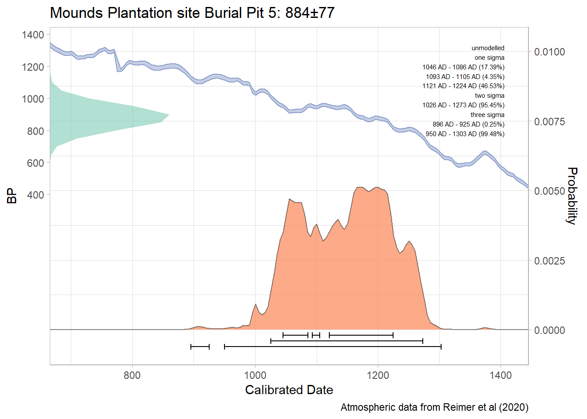
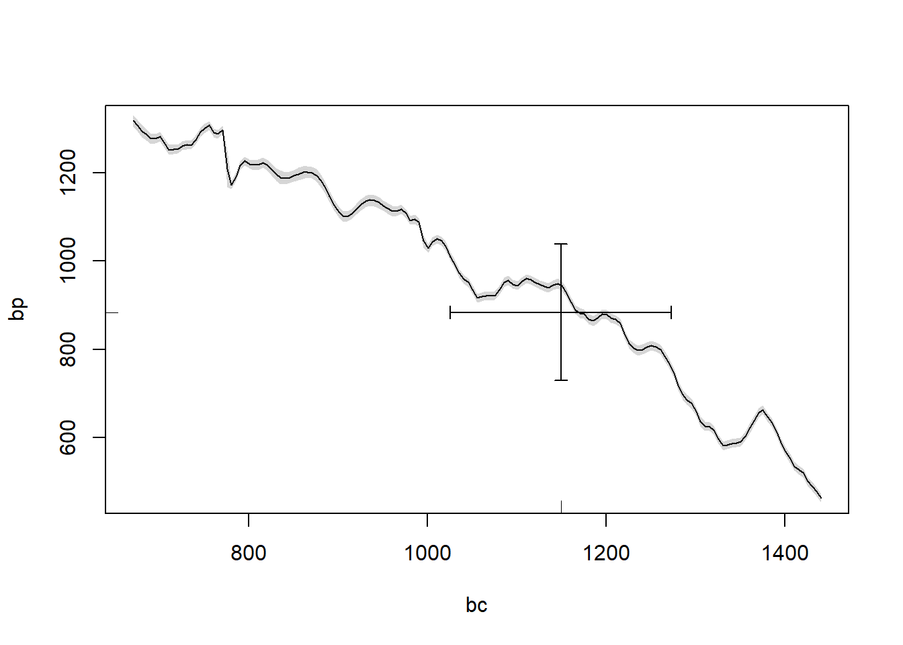
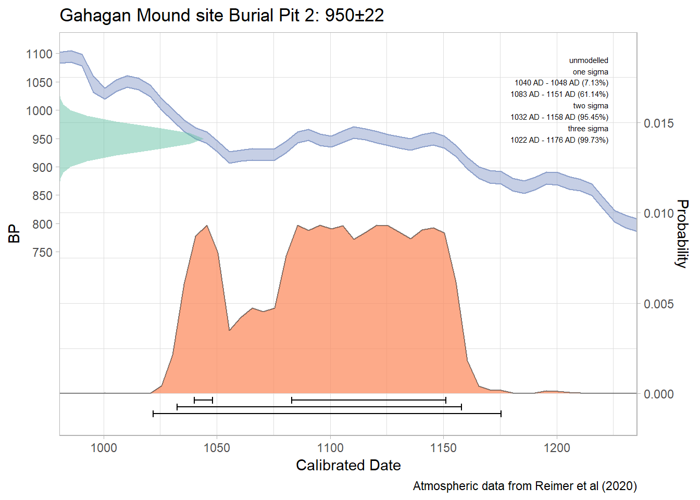
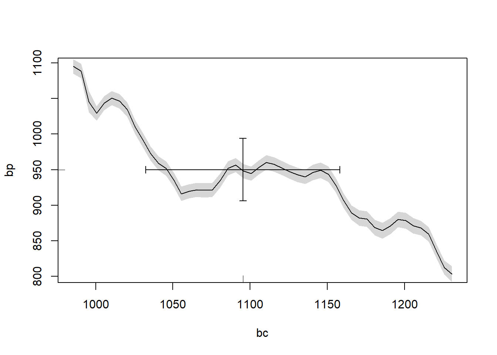
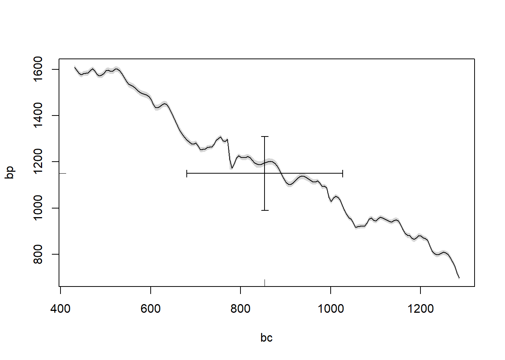

Chapter 1 Recalibrate Legacy Dates
Further information regarding the radiocarbon dates discussed below can be found in the text of the previous article (Selden Jr., Dockall, and Dubied 2020). A table of associated diagnostic artefacts is included as a means of providing information related to relative dates.
# check for update
#devtools::install_github('ISAAKiel/oxcAAR')
# load oxcAAR and OxCal
library(kableExtra)
library(rcarbon)## Registered S3 method overwritten by 'spatstat.geom':
## method from
## print.boxx cli##
## Attaching package: 'rcarbon'## The following object is masked from 'package:vegan':
##
## calibrate## The following object is masked from 'package:dplyr':
##
## combinelibrary(oxcAAR)
quickSetupOxcal()## Oxcal doesn't seem to be installed. Downloading it now:## Oxcal stored successful at C:\Users\seldenjrz\AppData\Local\Temp\RtmpYDqPr8!## Oxcal path set!## NULL1.1 Calibration and plots for dates from Burial Pit 5 at the Mounds Plantation site
Three dates (Tx-55, Tx-56, and M-1466) were reported from Burial Pit 5 at the Mounds Plantation site. Additional information about these dates can be found in the text, and those works cited within the text of the manuscript.
moundspl<-data.frame(bp=c(860, 900),
std=c(120, 100),
names=c("Tx-55", "M-1466")
)
moundsplpool <- with(moundspl, poolDates(bp, std))
moundsplcal <- oxcalCalibrate(moundsplpool$wCRA,
moundsplpool$wCRAerrors,
"Mounds Plantation site Burial Pit 5")
moundsplcal##
## =============================
## R_Date: Mounds Plantation site Burial Pit 5
## =============================
##
##
## BP = 884, std = 77
##
##
## unmodelled: posterior:
##
## one sigma
## 1046 AD - 1086 AD (17.39%)
## 1093 AD - 1105 AD (4.35%)
## 1121 AD - 1224 AD (46.53%)
##
## two sigma
## 1026 AD - 1273 AD (95.45%)
##
## three sigma
## 896 AD - 925 AD (0.25%)
## 950 AD - 1303 AD (99.48%)
##
## Calibrated with:
## Atmospheric data from Reimer et al (2020)plot(moundsplcal)## Warning: It is deprecated to specify `guide = FALSE` to remove a guide. Please use `guide =
## "none"` instead.
calcurve_plot(moundsplcal)
1.2 Calibration and plots for dates from Burial Pit 2 at the Gahagan Mound site
Three AMS dates (UGA12296, ISGS A0465, and ISGS A0466) were reported from Burial Pit 2 at the Gahagan Mound site. Additional information about these dates can be found in the text, and those works cited within the text of the manuscript.
gahagan<-data.frame(bp=c(1000, 950, 910),
std=c(40, 40, 35),
names=c("UGA-12296", "ISGS-A0466", "ISGS-A0465")
)
gahaganpool <- with(gahagan, poolDates(bp, std))
gahagancal<-oxcalCalibrate(gahaganpool$wCRA,
gahaganpool$wCRAerrors,
"Gahagan Mound site Burial Pit 2")
gahagancal##
## =============================
## R_Date: Gahagan Mound site Burial Pit 2
## =============================
##
##
## BP = 950, std = 22
##
##
## unmodelled: posterior:
##
## one sigma
## 1040 AD - 1048 AD (7.13%)
## 1083 AD - 1151 AD (61.14%)
##
## two sigma
## 1032 AD - 1158 AD (95.45%)
##
## three sigma
## 1022 AD - 1176 AD (99.73%)
##
## Calibrated with:
## Atmospheric data from Reimer et al (2020)plot(gahagancal)## Warning: It is deprecated to specify `guide = FALSE` to remove a guide. Please use `guide =
## "none"` instead.
calcurve_plot(gahagancal)
1.3 Calibration and plots for the dates from F119 and F134 at the George C. Davis site
Two dates (Tx-913 and Tx-1206) were reported from Features 119 and 134, respectively. The date from F134 is not included here, since the results are considered to be inconsistent with the stratigraphy and seriation results. Additional information about Tx-913 can be found in the text and cited references.
gcd<-data.frame(bp=c(1150),
std=c(80),
names=c("Tx-913")
)
gcdcal<-oxcalCalibrate(gcd$bp,
gcd$std,
gcd$names)
gcdcal##
## =============================
## R_Date: Tx-913
## =============================
##
##
## BP = 1150, std = 80
##
##
## unmodelled: posterior:
##
## one sigma
## 776 AD - 790 AD (5.37%)
## 822 AD - 991 AD (62.9%)
##
## two sigma
## 680 AD - 748 AD (9.56%)
## 759 AD - 1026 AD (85.89%)
##
## three sigma
## 652 AD - 1054 AD (98.36%)
## 1076 AD - 1158 AD (1.37%)
##
## Calibrated with:
## Atmospheric data from Reimer et al (2020)plot(gcdcal)## Warning: It is deprecated to specify `guide = FALSE` to remove a guide. Please use `guide =
## "none"` instead.
calcurve_plot(gcdcal)